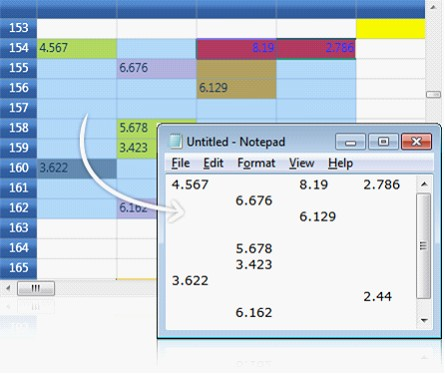
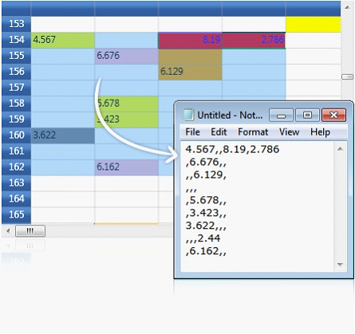

Essential Grid provides complete support for clipboard operations. Users can cut/copy & paste any data inside the grid to or from other OLE [Object Linking and Embedding]-enabled applications such as Notepad. The built-in source allows the users to copy the text data along with the style information and also provides hooks that let users customize the clipboard operation of pasting the custom formatted data.
Copy Paste Options
Copy Paste Option property defines the list of clipboard operations supported by the grid. It exposes the following options:
· CopyText – Copies only the text from the grid selection to clipboard
· CopyCellData – Copies both text and style information from grid cells to clipboard
· PasteTex t– Pastes only the text from clipboard
· PasteCell – Pastes the cell text and style information from the clipboard
· CutText – Moves only the text from grid to clipboard
· CutCell – Moves the text and the style information from grid to clipboard
· ExcludeCurrentCell – Skips current cell while doing clipboard operations
Example
Define copy paste behaviors, by using the following code.
|
[C#]
//Copy cell data with style gridControl.Model.Options.CopyPasteOption |= CopyPaste.CopyCellData;
//Cut cell data with style gridControl.Model.Options.CopyPasteOption |= CopyPaste.CutCell;
//Paste cell data with style gridControl.Model.Options.CopyPasteOption |= CopyPaste.PasteCell;
//Code to cut copy paste cell text (excluding style) gridControl.Model.Options.CopyPasteOption = (CopyPaste)(0); gridControl.Model.Options.CopyPasteOption |= CopyPaste.CopyText; gridControl.Model.Options.CopyPasteOption |= CopyPaste.CutText; gridControl.Model.Options.CopyPasteOption |= CopyPaste.PasteText; |

Figure 66: Pasting the grid data in Notepad
Text Data Exchange
GridModel.TextDataExchange helps the users in customizing the clipboard operations. It is used as an interface that exposes the following property and methods.
· Property - TabDelimiter
· Method - CopyTextToBuffer(), PasteTextFromBuffer()
Property
1. TabDelimiter Property
This property specifies a delimiter for the text to be pasted. This is useful to paste the cell data in CSV (Comma-Separated Values) format.
|
[C#]
gridControl.Model.TextDataExchange.TabDelimiter = ","; |

Figure 67: Pasting the grid data in CSV format
Methods
2. CopyTextToBuffer() Method
This method lets the users to place the cell data into an intermediate buffer, which can be customized. The method performs clipboard Cut or Copy operation depending on the third parameter given to it. This method accepts the following parameters:
· String buffer
· Selected range of cells
· Boolean value -This should be set to true for cut operation and should be set to false for copy operation.
The following code illustrates the CopyTextToBuffer method:
|
[C#]
gridControl.Model.TextDataExchange.CopyTextToBuffer(out buffer, gridControl.Model.SelectedRanges, out row, out col, false); |
When the code runs, it returns the following values:
· Cell text
· No. Of rows affected
· No. Of columns affected
3. PasteTextFromBuffer() Method
Pass the values returned by the CopyTextToBuffer method as parameter to the PasteTextFromBuffer method, by using the following code:
|
[C#]
gridControl.Model.TextDataExchange.PasteTextFromBuffer(buffer, gridControl.Model.SelectedRanges); |
When the code runs, it pastes the text from the given buffer into specified range of grid cells.
Events
Grid provides the following events to customize the clipboard data.
· ClipboardCanCopy
· ClipboardCanCut
· ClipboardCanPaste
· ClipboardCopy
· ClipboardCut
· ClipboardPaste
IGridCopyPaste
Essential Grid defines an interface called IGridCopyPaste that exposes some methods, namely Copy(), Cut() and Paste(). Here the users can write custom code to perform cut copy or paste operations with any kind of user-defined data. Thereby, it extends its clipboard support behavior to perform clipboard operations in various forms.
 Note: This feature would be available only
in Silveright 4 application, because Microsoft has support for Clipboard
only in Silverlight 4.
Note: This feature would be available only
in Silveright 4 application, because Microsoft has support for Clipboard
only in Silverlight 4.